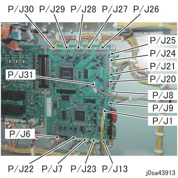
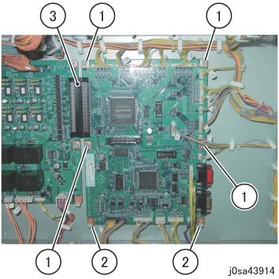
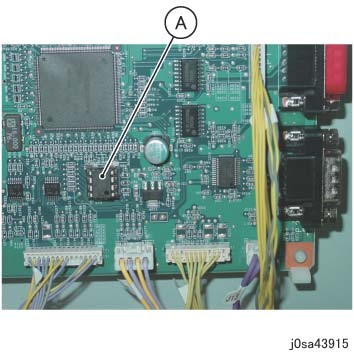

REP 39.37.2 (SCC) HCS电路板 
参考 PL:PL 39.37
Removal

在...之后 turning 关闭/脱离 电源开关, 确认 the screen 显示 进入 关闭/脱离 和 the [电源 Saver] button 停止 blinking. 然后, 关闭 the 主 电源 开关, 确认 the [主 电源] 灯 具有 turned 关闭/脱离, 和 然后 关闭 the Breaker 和 unplug 电源插头.
拆卸 HCS 从 上游 设备. (REP 39.1.1)
拆卸后盖板. (REP 39.2.2)
断开连接器 (x18) 的 HCS电路板. (图 1)

(图 1) sa43913
拆卸 HCS电路板. (图 2)
拆卸螺钉（x4）.
释放 hook (x2) 的 PWB Support.
断开连接器 和 拆卸 HCS电路板.

(图 2) sa43914
安装
更换后, 拆卸 SEEP ROM 从 the 旧 HCS电路板 和 安装 it 到...上 the 新 one.
(A) SEEP ROM

(图 3) sa43915

如果 HCS电路板 不 具有 a removable SEEP ROM, do 以下:
1. 更换 HCS电路板.
2. Download the 固件.
3. Initialize the HCS NVM.
4. Reconfigure NVM individual 设置 (loading 容量, 等.).
As 初始值 of HCS NVM differs 取决于 IOT, 务必 download the 固件 和 initialize the NVM. 也, 如果 SEEP ROM 不是 transferred, the HFSI 值 将不会 be inherited. HCS’s HFSI 具有 仅 a 960-800 桨轮 life, 但是 you 应 manage your life manually 直到 the 下一个 桨轮 更换.
是否 or 不 the SEEP ROM 可以 transferred 用于 每个 零件号 is 如下, 但是 it 不是 necessary to be aware of it in detail, 和 it is judged by 是否 or 不 那里 is a removable SEEP ROM 在...上 HCS电路板.
- 960K 3811x 最大到 960K 38113 is SEEP ROM 转印, 960K 38114 afterwards is NVM 重置
- 960K 4719x 最大到 960K 47194 is SEEP ROM 转印, 960K 47195 afterwards is NVM 重置
- 960K 9710x ... NVM rest 无论 the 端部
- 961K 1078x ... NVM 重置 无论 the 端部